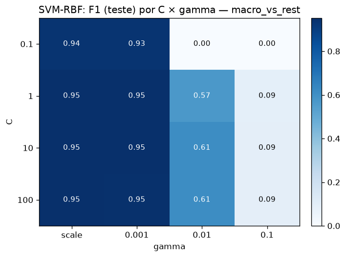
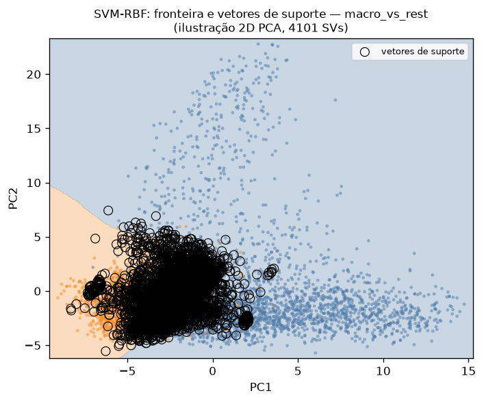

SVM com kernel gaussiano para classificação binária da coleção pessoal de imagens (CLIP), 3 tarefas. Foco do enunciado: os vetores de suporte como "centros" efetivos e o efeito de C e γ.
fronteira de maior separação
só os pontos críticos definem a fronteira
hiperparâmetros varridos
K(x, xᵢ) = exp( −γ·‖x − xᵢ‖² )
f(x) = Σᵢ αᵢ·yᵢ·K(x, xᵢ) + b
ŷ = sinal( f(x) )K mede a similaridade gaussiana entre x e cada vetor de suporte xᵢ; f(x) soma essas similaridades ponderadas (αᵢ·yᵢ) e o sinal decide a classe. γ ajusta o alcance do kernel; C, a tolerância a erro.
| Tarefa (full-dim, seed=42) | Acc | F1 | SVs |
|---|---|---|---|
| macro_vs_rest | 0.966 | 0.951 | 1515 |
| has_people | 0.966 | 0.895 | 1684 |
| screenshot×foto | 0.931 | 0.762 | 2652 |
C=10, γ=scale, treino subamostrado a 6000 (SVM escala O(N²)). Tabela da seed=42 (ilustração); oficial multi-seed (3 seeds): has_people 0.962±0.003 (F1 0.883±0.010), screenshot×foto 0.933±0.002 (F1 0.770±0.007), macro_vs_rest 0.968±0.002 (F1 0.954±0.004).

